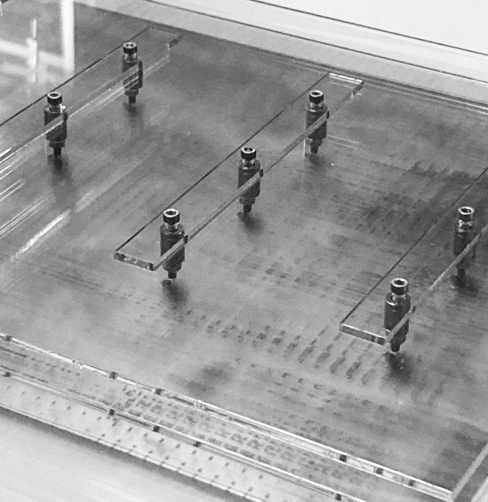
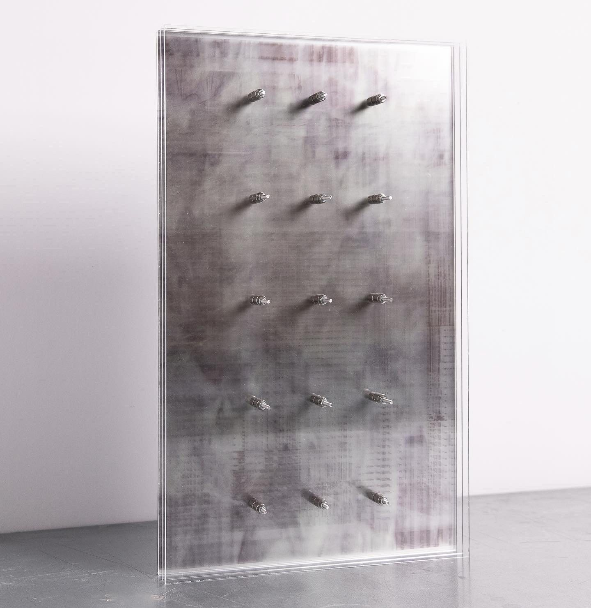
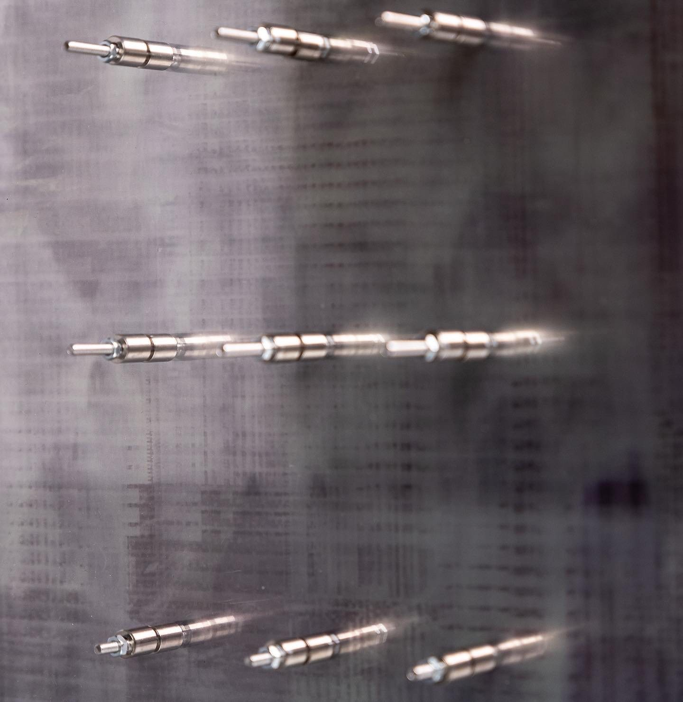
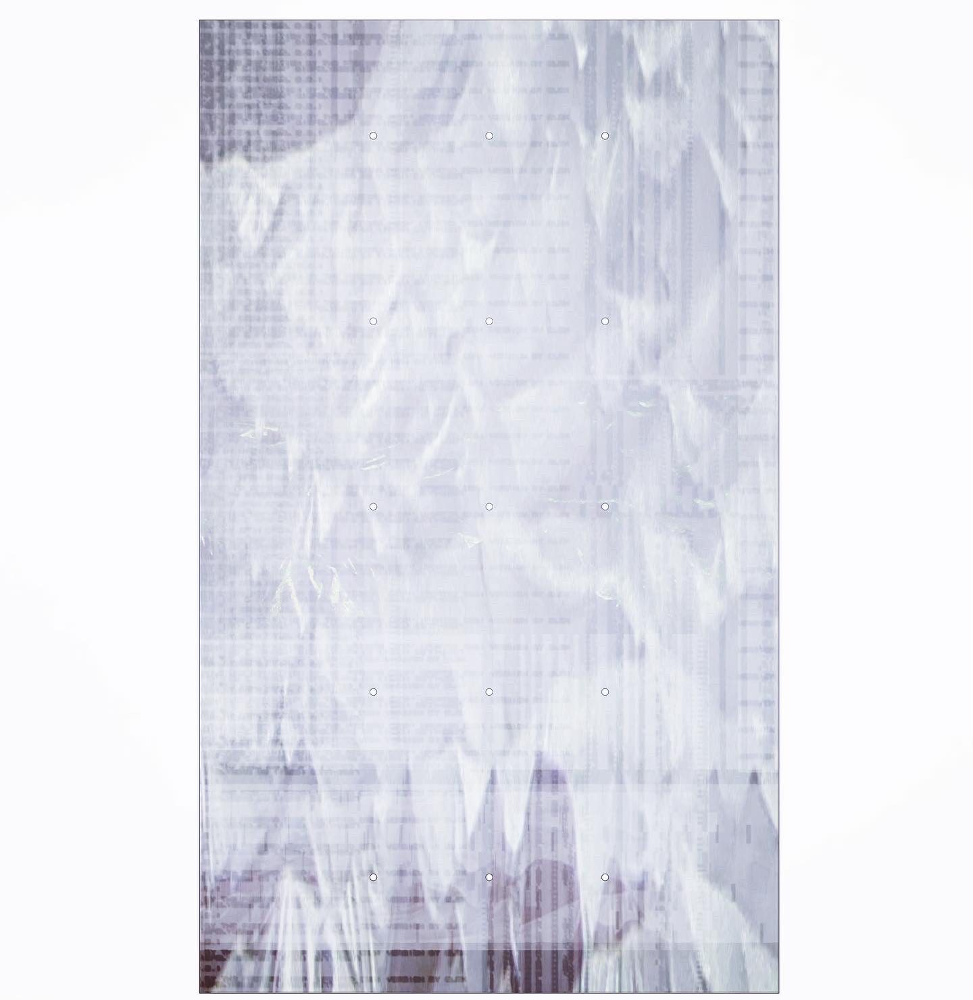
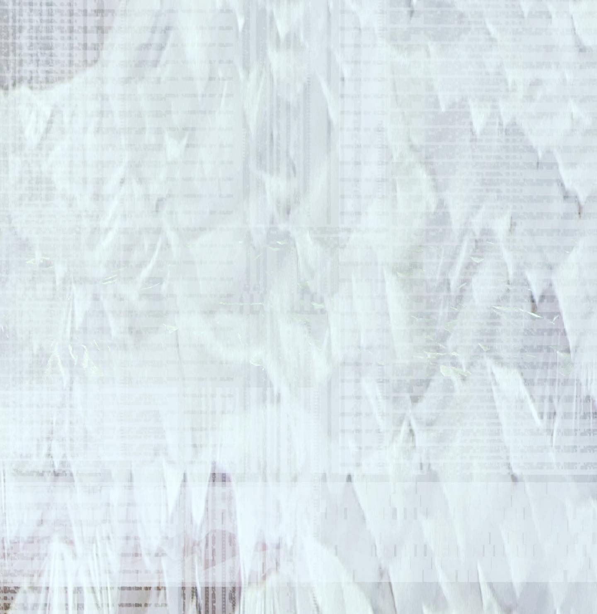
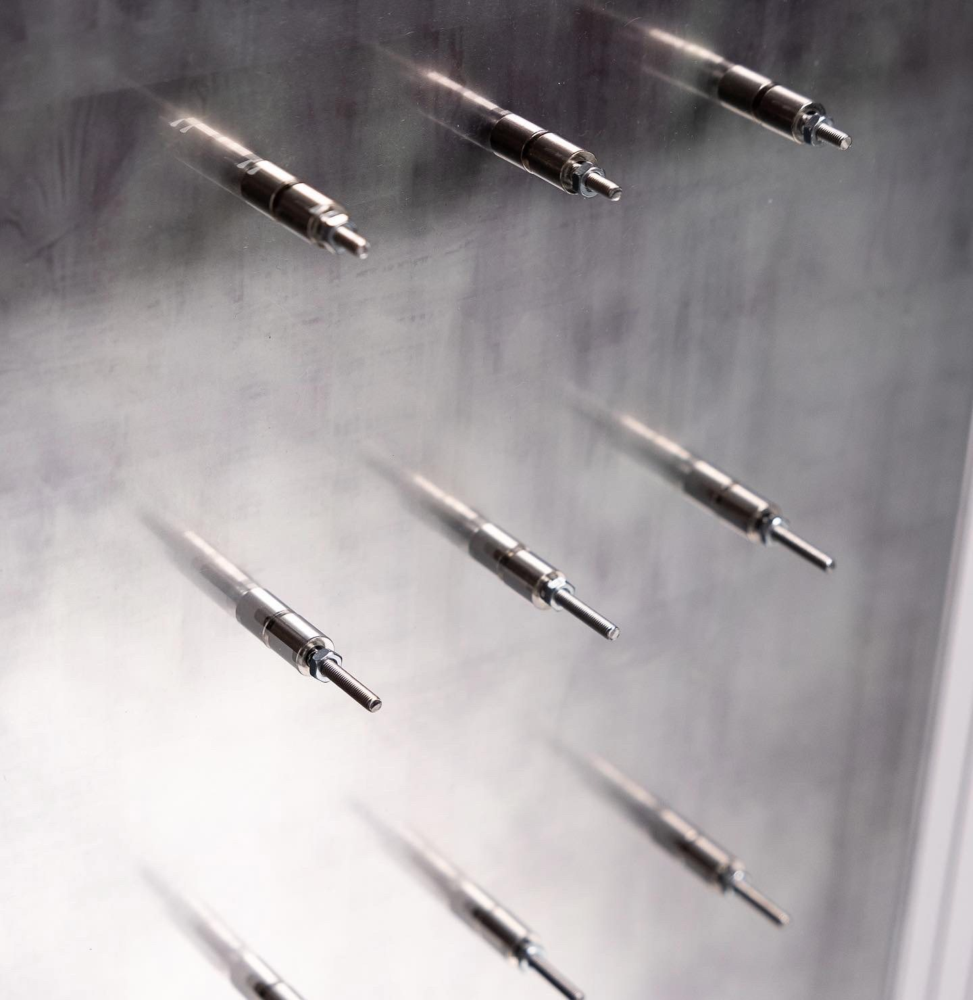
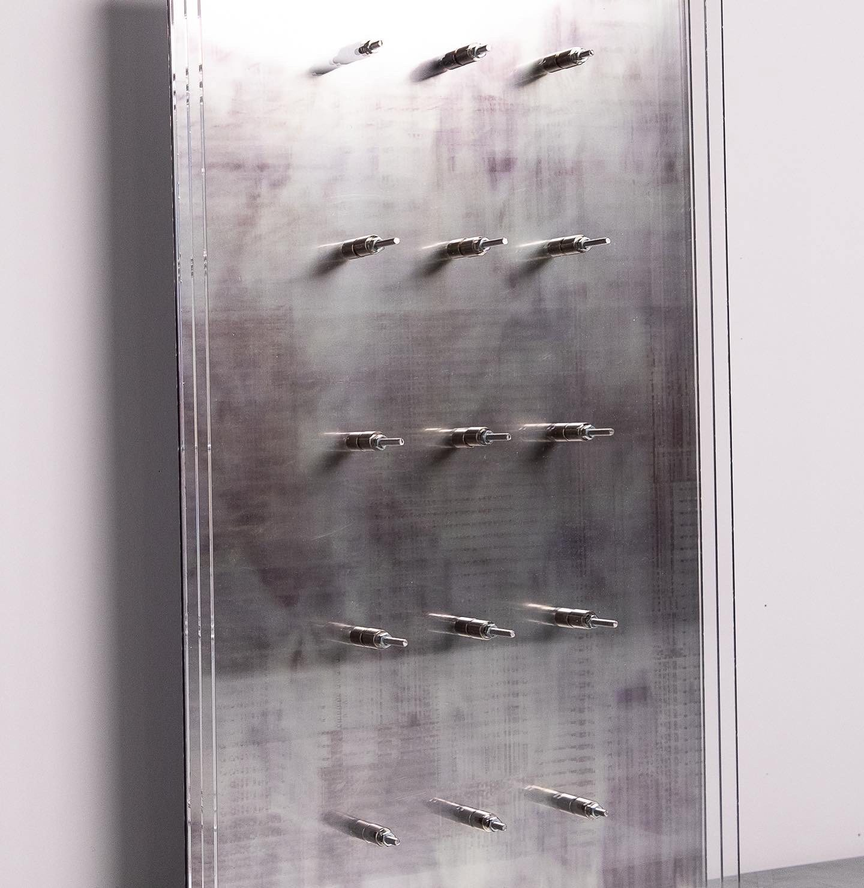
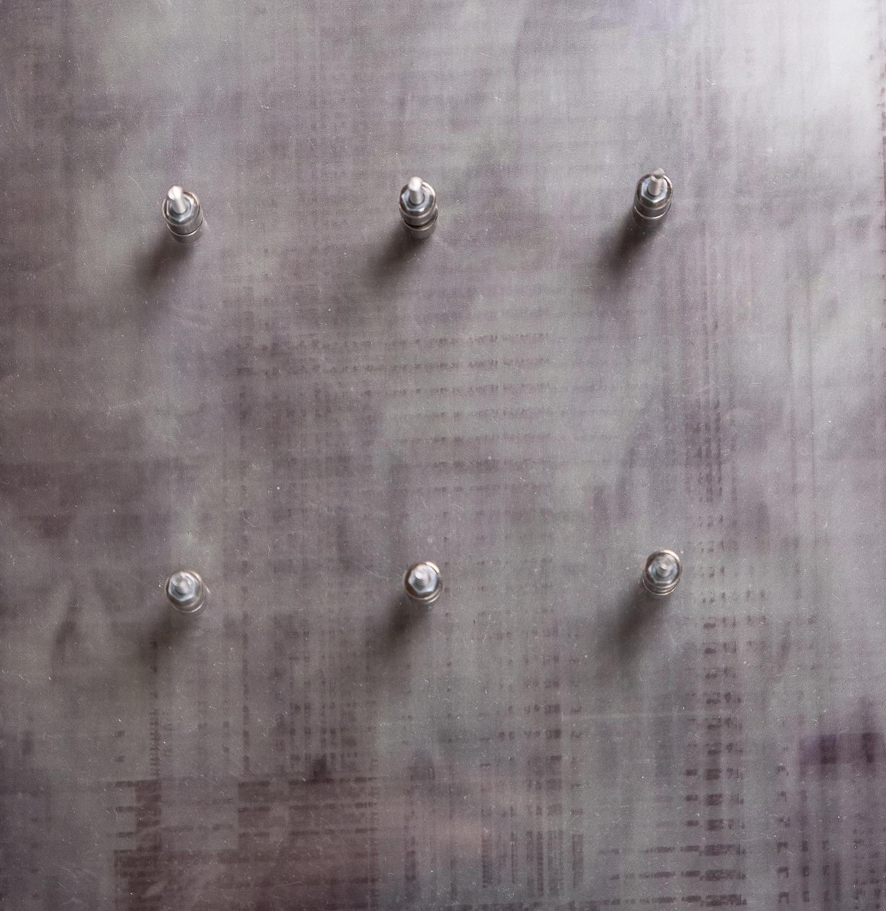
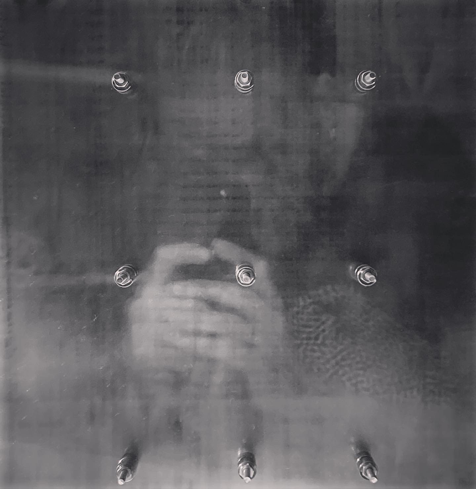
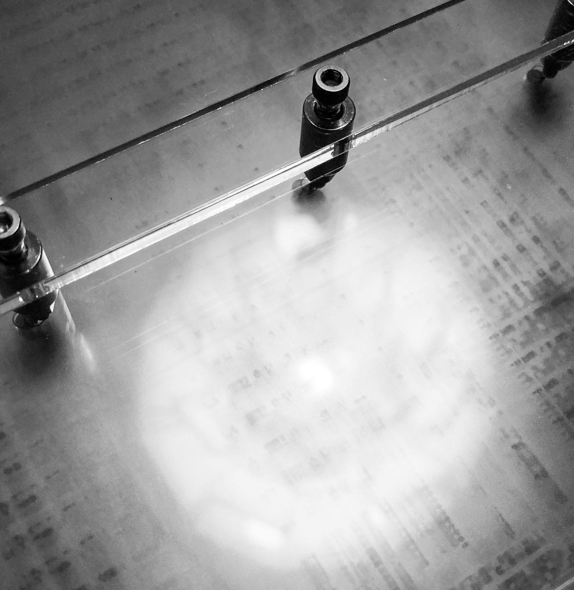

ANTHROPOCENE INCISIONS #2
techno-geological layered sculptures
'anthropocene incisions'
made in dialogue with lasse gam folke
'Anthropocene Incisions' is a mirror of artificial dystopian biopsies that cultivate a type of techno-geological strata after the climate crisis. The transparency, reflection and choice of materials of the works are reminiscent of the scientific incisions and investigations.
'anthropocene incisions'
(2023) ongoing artistic investigation
made in dialogue with lasse gam folke
.
photos by
jakob holmqvist larsen









